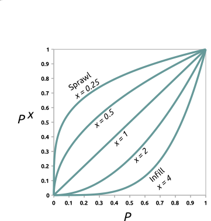
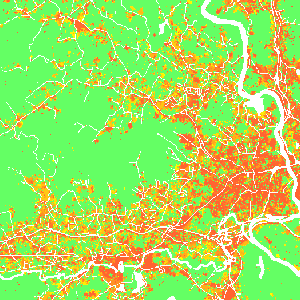
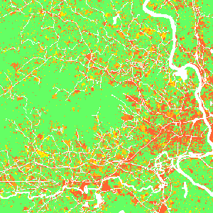
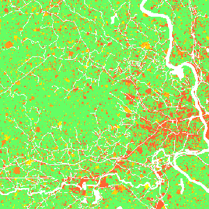
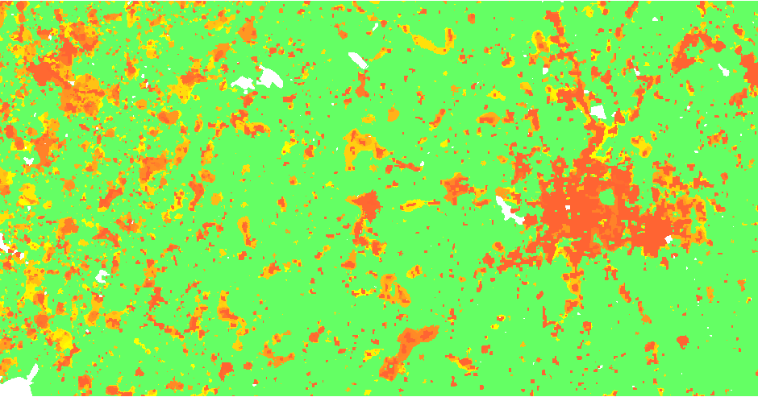
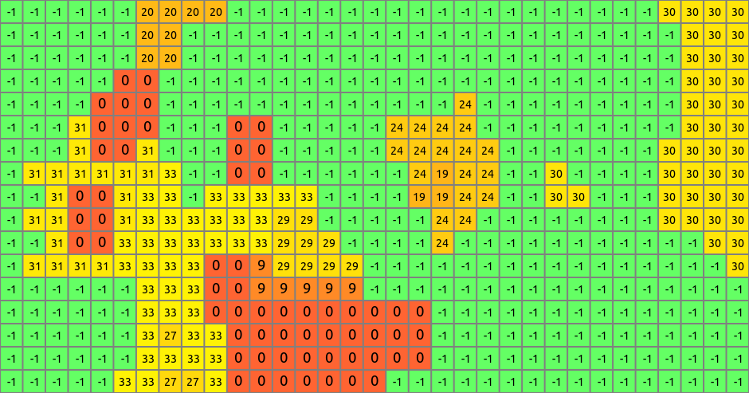

DESCRIPTION
Module r.futures.simulation is part of FUTURES
land change model.
This module uses stochastic Patch-Growing Algorithm (PGA)
and a combination of field-based and object-based representations
to simulate land changes.
PGA simulates undeveloped to developed land change by iterative site selection
and a contextually aware region growing mechanism.
Simulations of change at each time step feed development pressure back
to the POTENTIAL submodel, influencing site suitability for the next step.
Patch growing
Patches are constructed in
three steps. First, a potential seed is randomly selected from available cells.
In case seed_search is probability, the probability value (based on POTENTIAL)
of the seed is tested using Monte Carlo approach, and if it doesn't survive,
new potential seed is selected and tested.
Second, using a 4- or 8-neighbor (see num_neighbors) search rule PGA grows the patch.
PGA decides on the suitability of contiguous cells based on their
underlying development potential and distance to the seed adjusted
by compactness parameter given in compactness_mean and compactness_range.
The size of the patch is determined by randomly selecting a patch size from patch sizes file
and multiplied by discount_factor. To find optimal values
for patch sizes and compactness, use module
r.futures.calib.
Once a cell is converted, it remains developed.
PGA continues to grow patches until the per capita land demand is satisfied.
Development pressure
Development pressure is a dynamic spatial variable
derived from the patch-building process of PGA and associated with the POTENTIAL submodel.
At each time step, PGA updates the POTENTIAL probability surface based on land change,
and the new development pressure then affects future land change.
The initial development pressure is computed using module
r.futures.devpressure.
The same input parameters of this module
(gamma, scaling factor and n_dev_neighbourhood)
are then used as input for
r.futures.simulation.
Scenarios
Scenarios involving policies that encourage infill versus sprawl
can be explored using the incentive_power parameter,
which uses a power function to transform the probability in POTENTIAL.

Figure: Transforming development potential surface using incentive tables with different power functions.



Figure: Effect of incentive table on development probability:
infill (left), status quo (middle), sprawl (right) scenario.
Additionally, parameter potential_weight (raster map from -1 to 1)
enables users to include policies (such as new regulations or fees) which limit or encourage
development in certain areas.
Where potential_weight values are lower than 0,
the probability surface is simply multiplied by the values,
which results in decreased site suitability.
Similarly, values greater than 0 result in increased site suitability.
The probability surface is transformed from initial probability p
with value w to p + w - p * w.
Parameters zoning (raster containing zoning district IDs) and zoning_effects
(table containing zoning effects corresponding to zoning district IDs) enable users to include
land use regulations (e.g., zoning) which constrain or incentivize development. zoning can be used
alone or in combination with zoning_effects. If zoning_effects is not provided,
any or all of the following zoning IDs should be present in the zoning raster and the predefined
zoning effects are applied.
| Zoning District | Zoning ID | Zoning Effect |
|---|
| High-Density Residential | 100 | 0 |
| Medium-High Density Residential | 101 | -0.124 |
| Medium Density Residential | 110 | -0.440 |
| Medium-Low Density Residential | 120 | -0.656 |
| Low-Density Residential | 130 | -0.780 |
| Rural Residential | 131 | -0.790 |
| Commercial | 200 | -0.157 |
| Industrial | 201 | -0.026 |
| Office | 202 | -0.127 |
| Parks and Recreation | 203 | -0.817 |
| Mixed Use | 300 | -0.105 |
| Planned Use | 301 | 0.115 |
| Downtown | 302 | -1 |
| No Zoning | 0 | 0 |
Where zoning effects are lower than 0, site suitability is decreased, when greater than 0
site suitability is increased. For zoning effect (w') less than 0, site suitability (p)
is adjusted following p(1 - |w'|). If zoning effects are greater than 0, site suitability is adjusted
following p + w' - p * w'. Note: If part of your study region does not have zoning, or you do not wish to apply the zoning
effect to part of your study region, you may assign zoning ID 0 to those areas.
Users can also optionally provide unique zoning effects (values between -1 and 1)
or regional stringency values (values between 0 and 2) in zoning_effects table.
Stringency values adjust the magnitude of the effect of each zoning district by region.
Values less than 1 reduce the magnitude of zoning effects while values greater than
1 increase the magnitude. Given zoning effect w and stringency s,
adjusted zoning effects w' = max(-1, min(1, w * s)).
Examples of zoning_effects table
Region_ID values in the first column should align with region IDs in subregions raster
and zoning ID column headers should align with zoning IDs in zoning raster.
Providing unique zoning IDs (1, 2) and effects, but no regional stringency (set to 1):
Region_ID,stringency,1,2
1,1,-0.5,0.5
2,1,-0.8,0.3
Using default zoning IDs and effects, but providing regional stringency values:
Region_ID,stringency
1,0.5
2,1.5
Output
After the simulation ends, raster specified in parameter output is written.
If optional parameter output_series is specified, additional output
is a series of raster maps for each step.
Cells with value 0 represents the initial development, values >= 1 then represent
the step in which the cell was developed. Undeveloped cells have value -1.

Figure: Output map of developed areas

Figure: Detail of output map
Climate forcing
Climate forcing submodel estimates the probability that a developed pixel will experience flood damage
and the likely adaptation response (protect and armour, retreat, or stay trapped).
Response is based on flood probability, level of damage, and local estimates of adaptive capacity.
Climate forcing submodel integrates current and future flood probability and flood depth data
with the adaptive capacity of developed pixels to probabilistically predict flood severity
and the response evoked by flooding in a developed pixel. The model also predicts the within- or
between-county destinations of displaced residents.
The input flood_maps_file includes flood depth data for different flood probabilities
for different steps of the simulation:
step,probability,raster
1,0.05,flood_20yr_2020_depth
1,0.01,flood_100yr_2020_depth
1,0.002,flood_500yr_2020_depth
11,0.05,flood_20yr_2030_depth
11,0.01,flood_100yr_2030_depth
11,0.002,flood_500yr_2030_depth
Alternatively, if such detailed data are not available, one can use floodplain raster
of given flood return period together with HAND (Height Above Nearest Drainage) raster
(hand option) derived from a DEM
to estimate flood depth automatically (experimental). Flood probablity raster
then contains the probability values (e.g., 0.01 for a 100-yr flood).
step,raster
1,flood_probability_2020
11,flood_probability_2030
Option hand_percentile influences the derived depth, high values (> 90)
tend to overestimate the flood depth.
Flood events are stochastically simulated on the level of HUCs (e.g., HUC 12),
use huc input option for raster representation of HUCs.
Use flood_logfile to log the simulated flood events into a CSV file
for further information (step, HUC ID, flood probability).
Once a flood event is simulated, local damage is estimated
using flood-damage curves provided in a CSV file in option depth_damage_functions.
Its header includes inundation levels in vertical units.
The first column is an id of a subregion given in ddf_subregions
and the values are percentages of structural damage.
ID,0.3,0.6,0.9
101,0,15,20
102,10,20,30
Once the damage is established, response is stochastically evaluated based
on the adaptive_capacity raster with values ranging from -1 (most vulnerable)
to 1 (most resilient). Option response_func evaluates the response
based on the damage and adaptive capacity, e.g., with high damage vulnerable populations are
less likely to protect and armour (adapt) than higly resilient populations.
Responses include 1) retreat resulting in pixel abandonment,
2) stay and adapt, and 3) stay trapped.
When a pixel is abandoned, the redistribution_matrix
is used to decide to which subregion the pixel is moved.
It contains probabilities of moving from one subregion to another:
ID,37013,37014,...
37013,0.6,0.01,...
37014,0.05,0.3,...
Output file redistribution_output can be used to log the redistribution
happening during the simulation.
EXAMPLE
r.futures.simulation -s developed=lc96 predictors=d2urbkm,d2intkm,d2rdskm,slope \
demand=demand.txt devpot_params=devpotParams.csv discount_factor=0.6 \
compactness_mean=0.4 compactness_range=0.08 num_neighbors=4 seed_search=probability \
patch_sizes=patch_sizes.txt development_pressure=gdp n_dev_neighbourhood=10 \
development_pressure_approach=gravity gamma=2 scaling_factor=1 \
subregions=subregions incentive_power=2 \
potential_weight=weight_1 output=final_results output_series=development
REFERENCES
-
Meentemeyer, R. K., Tang, W., Dorning, M. A., Vogler, J. B., Cunniffe, N. J., & Shoemaker, D. A. (2013).
FUTURES: Multilevel Simulations of Emerging Urban-Rural Landscape Structure Using a Stochastic Patch-Growing Algorithm.
Annals of the Association of American Geographers, 103(4), 785-807.
DOI: 10.1080/00045608.2012.707591
-
Dorning, M. A., Koch, J., Shoemaker, D. A., & Meentemeyer, R. K. (2015).
Simulating urbanization scenarios reveals tradeoffs between conservation planning strategies.
Landscape and Urban Planning, 136, 28-39.
DOI: 10.1016/j.landurbplan.2014.11.011
-
Petrasova, A., Petras, V., Van Berkel, D., Harmon, B. A., Mitasova, H., & Meentemeyer, R. K. (2016).
Open Source Approach to Urban Growth Simulation.
Int. Arch. Photogramm. Remote Sens. Spatial Inf. Sci., XLI-B7, 953-959.
DOI: 10.5194/isprsarchives-XLI-B7-953-2016
-
Sanchez, G.M., A. Petrasova, A., M.M. Skrip, E.L. Collins, M.A. Lawrimore,
J.B. Vogler, A. Terando, J. Vukomanovic, H. Mitasova, and R.K. Meentemeyer (2023).
Spatially interactive modeling of land change identifies location-specific adaptations most likely to lower future flood risk.
Sci Rep 13, 18869.
DOI: 10.1038/s41598-023-46195-9
SEE ALSO
FUTURES,
r.futures.parallelpga,
r.futures.devpressure,
r.futures.potential,
r.futures.potsurface,
r.futures.demand,
r.futures.calib,
r.futures.gridvalidation,
r.futures.validation,
r.sample.category
AUTHORS
Corresponding author:
Anna Petrasova, akratoc ncsu edu,
Center for Geospatial Analytics, NCSU
Original standalone version:
Ross K. Meentemeyer,
Wenwu Tang,
Monica A. Dorning,
John B. Vogler,
Nik J. Cunniffe,
Douglas A. Shoemaker
(Department of Geography and Earth Sciences, UNC Charlotte)
Jennifer A. Koch
(Center for Geospatial Analytics, NCSU)
Port to GRASS and GRASS-specific additions:
Vaclav Petras,
NCSU GeoForAll
Development pressure, demand, calibration, validation, preprocessing tools and maintenance:
Anna Petrasova,
NCSU GeoForAll
Climate forcing submodel:
Anna Petrasova,
NCSU GeoForAll
Georgina Sanchez,
Center for Geospatial Analytics, NCSU
Zoning:
Margaret Lawrimore,
Center for Geospatial Analytics, NCSU
Anna Petrasova,
NCSU GeoForAll